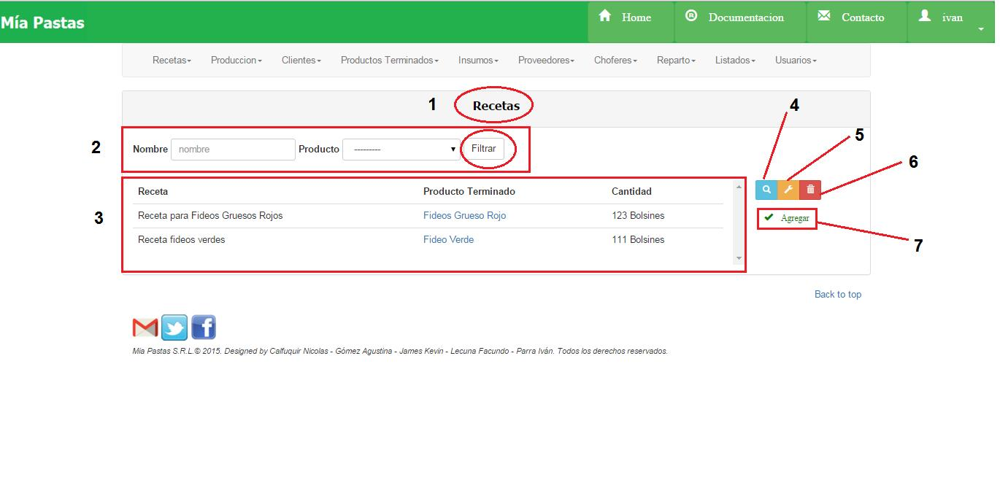
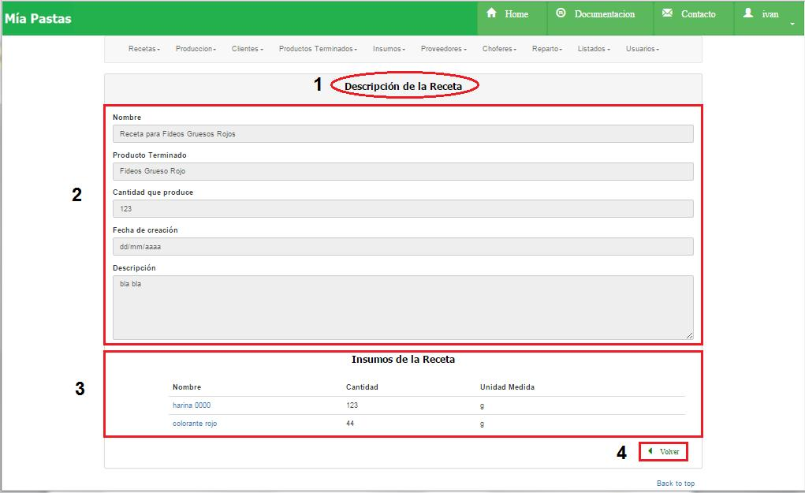
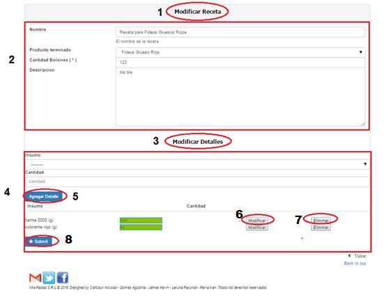
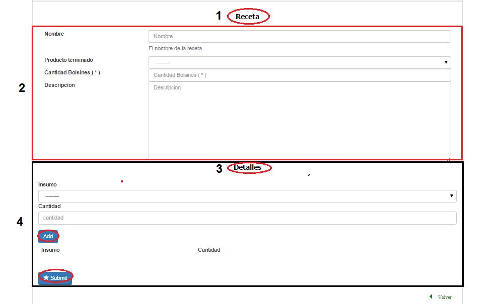

Recetas¶
Dentro de ABM Productos Terminados aparecerá la siguiente pantalla
- Nombre de la sección donde estamos ubicados.
- Es el sector de filtrado, se podrá filtrar por nombre o producto.
- Área de resultado del filtro donde se mostrará nombre, producto terminado y cantidad, de no haberse realizado ningún filtro mostrará todas las recetas existentes. Al hacer click en Producto terminado mostrará todos los datos del producto terminado asociado.
- El icono de lupa sirve para mostrar más detalle sobre el ítem seleccionado como se muestra en la siguiente figura. De no seleccionar previamente un ítem aparecerá un mensaje de error.
- El icono de llave sirve para realizar una modificación sobre el ítem seleccionado. Para esto se deberá hacer click previamente sobre el ítem deseado. De no seleccionar previamente un ítem aparecerá un mensaje de error.
- Eliminar una receta.
- Alta de una receta, permite crear una receta.
Consultar Recetas¶
- Nombre de la sección en la que nos ubicamos, (2) descripción de la receta, (3) el detalle de la receta, (4) botón para volver a la página anterior.
Modificar Recetas¶
- Nombre de la sección en la que nos ubicamos, (2) descripción de la receta a modificar, (3 y 4) el detalle de la receta a modificar, (5) agregar un insumo y su cantidad a la receta, (6) modificar la cantidad del insumo, (7) eliminar el insumo de la receta, (8) guardar los cambios de la receta.
Observaciones:
No se podrá modificar una receta con un producto terminado que ya exista en otra receta.
Eliminar Recetas¶
Se deberá seleccionar una receta haciendo click, y luego hacer click sobre el botón de eliminar. Aparecerá el siguiente cartel:

Alta de Recetas¶
- Nombre de la sección en la que nos ubicamos, (2) descripción de la receta a crear, (3 y 4) el detalle de la receta a crear, agregar un insumo y su cantidad a la receta, debajo se encuentra el botón de guardar.
Observaciones:
No se podrá dar de alta una receta que tenga el mismo nombre que otra que ya exista. No se podrá dar de alta una receta que contenga un mismo producto terminado de otra receta.